Prevention:
Use latrines, wash hands before eating or handling food, protect food from flies, and follow the guidelines of cleanliness described in the first part of this chapter.
Treatment:
Mebendazole will usually get rid of roundworms. For dosage see p. 373.
Piperazine also works (see p. 374). Some home remedies work fairly well. For a home remedy using papaya see page 13.
WARNING: Do not use thiabendazole for roundworms. It often makes the worms
move up to the nose or mouth and can cause gagging.
Pinworm, Threadworm, Seatworm (Enterobious)
1 cm. long. Color: white. Very thin and threadlike.
How they are transmitted:
These worms lay thousands of eggs just outside the anus
(ass hole). This causes itching, especially at night. When a child scratches, the eggs stick under his nails, and are carried to food and other objects. In this way they reach his own mouth or the mouths of others, causing new infections of pinworms.
Effect on health:
These worms are not dangerous. Itching may disturb the child’s sleep.
Treatment and Prevention:
♦ A child who has pinworms should wear tight diapers or
pants while sleeping to keep him from scratching his anus.
♦ Wash the child’s hands and buttocks (anal area) when he
wakes up and after he has a bowel movement. Always wash his hands before he eats.
♦ Cut his fingernails very short.
♦ Change his clothes and bathe him often—wash the buttocks and nails
especially well.
♦ Put Vaseline in and around his anus at bedtime to help stop itching.
♦ Give mebendazole worm medicine. For dosage, see page 373. Piperazine
also works, but should not be used for babies (see p. 374). When one child is treated for these worms, it is wise to treat the whole family at the same time.
For a home remedy using garlic, see page 12.
♦ Cleanliness is the best prevention for threadworms. Even if medicine gets rid
of the worms, they will be picked up again if care is not taken with personal hygiene. Pinworms only live for about 6 weeks. By carefully following the guidelines of cleanliness, most of the worms will be gone within a few weeks, even without medicine.


Whipworm (Trichuris, Trichocephalus)
3 to 5 cm. long. Color: pink or gray.
This worm, like the roundworm, is passed from the feces of one person to the mouth of another person. Usually this worm does little harm, but it may cause diarrhea. In children it occasionally causes part of the intestines to come out of the anus (prolapse of the rectum).
Prevention: The same as for roundworm.
Treatment: If the worms cause a problem, give mebendazole. For dosage, see page 374. For prolapse of the rectum, turn the child upside down and pour cool water on the intestine. This should make it pull back in.
Hookworm
1 cm. long. Color: red.
Hookworms cannot usually be seen in the feces. A stool analysis is needed to prove that they are there.
How hookworms are spread:
3. The person coughs up the young
4. A few days later the person may worms and swallows them.
have diarrhea or a stomach-ache.
2. In a few days they reach the
5. The hookworms attach lungs through the blood stream.
themselves to the walls of the gut.
They may cause a dry cough
Many worms can cause weakness
(rarely with blood).
and severe anemia.
1. The baby hookworms enter
6. The hookworm eggs leave the body a person’s bare feet. This can in the person’s stools. The eggs hatch cause red marks on the feet on moist soil.
and itching.
Hookworm infection can be one of the most damaging diseases of childhood. Any child who is anemic, very pale, or eats dirt may have hookworms. If possible, his stools should be analyzed.
Treatment: Use mebendazole, albendazole, or pyrantel. For dosage and precautions, see pages 373 to 375. Treat anemia by eating foods rich in iron and if necessary by taking iron pills (p. 124).
Prevent hookworm: Build and use latrines.
Do not let children go barefoot.


Tapeworm
In the intestines tapeworms grow several meters long. But the small, flat, white pieces
(segments) found in the feces are usually about 1 cm.
long. Occasionally a segment may crawl out by itself and be found in the egg cyst underclothing.
adult tapeworm
People get tapeworms from eating pork (pig meat), segments beef (cow meat) or other meat or fish that is not well cooked.
Prevention: Be careful that all meat is well cooked, especially pork. Make sure no parts in the center of roasted meat or cooked fish are still raw.
When a person eats poorly cooked cysts meat, the cysts become tapeworms
The cysts may cause in his intestines.
headaches, seizures, or death.
The worm eggs the pig has
Eggs that enter the person’s eaten form cysts mouth from his feces, through in the meat.
lack of cleanliness, can form cysts in his brain.
adult tape worm
The pig eats the eggs segments eggs in the man’s stools.
Effect on health: Tapeworms in the intestines sometimes cause mild stomach aches, but few other problems.
The greatest danger exists when the cysts (small sacs containing baby worms)
get into a person’s brain. This happens when the eggs pass from his stools to his mouth. For this reason, anyone with tapeworms must follow the guidelines of cleanliness carefully—and get treatment as soon as possible.
Treatment: Take niclosamide (Yomesan, p. 375), or praziquantel (p. 375). Follow instructions carefully.
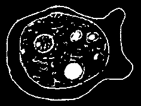

Trichinosis
These worms are never seen in the stools. They burrow through the person’s intestines and get into her muscles. People get these worms, like tapeworms, from eating infected pork or other meat that is not well cooked.
Effect on health: Depending on the amount of infected meat eaten, the person may feel no effects, or she may become very sick or die. From a few hours to 5 days after eating the infected pork, the person may develop diarrhea and feel sick to her stomach.
In serious cases the person may have:
• fever with chills
• small bruises (black or blue spots) on
• muscle pain the skin
• swelling around the eyes and
• bleeding in the whites of the eyes sometimes swelling of the feet
Severe cases may last 3 or 4 weeks.
Treatment: Seek medical help at once. Albendazole or mebendazole may help. For dosages, see p. 373 and 374. (Cortico-steroids may help, but should be given by a health worker or doctor.)
Important: If several people who ate meat from the same pig get sick afterward, suspect trichinosis. This can be dangerous; seek medical attention.
Prevention of trichinosis:
♦ Only eat pork and other meat that has been well cooked.
♦ Do not feed scraps of meat or leftovers from butchering to pigs unless the meat has first been cooked.
Amebas
These are not worms, but tiny animals—or parasites—that
Ameba as seen can be seen only with a microscope (an instrument that makes under a microscope things look much bigger).
How they are transmitted:
The stools of infected people contain millions of these tiny parasites. Because of poor sanitation, they get into the source of drinking water or into food, and other people become infected.
Signs of infection with amebas:
Microscope
Many healthy people have amebas without becoming sick. However, amebas are a common cause of severe diarrhea or dysentery (diarrhea with blood)—especially in persons already weakened by other sickness or poor nutrition. Less commonly, amebas cause painful, dangerous abscesses in the liver.

Typical amebic dysentery consists of:
• diarrhea that comes and goes—sometimes alternating with constipation
• cramps in the belly and a need to have frequent bowel movements, even when little or nothing—or just mucus—comes out
• many loose (but usually not watery) stools with lots of mucus, sometimes stained with blood
• in severe cases, much blood; the person may be very weak and ill
• if there is fever, it means there may also be a bacterial infection
Diarrhea with blood may be caused by either amebas or bacteria. However, bacterial dysentery (Shigella) begins more suddenly, the stools are more watery, and there is almost always fever (p. 158). As a general rule:
Diarrhea + blood + fever = bacterial infection (Shigella)
Diarrhea + blood + no fever = amebas
Occasionally bloody diarrhea has other causes. To be sure of the cause, a stool analysis may be necessary.
Sometimes amebas get into the liver and form an abscess or pocket of pus. This causes tenderness or pain in the right upper belly. Pain may extend into the right chest and is worse when the person walks. (Compare this with gallbladder pain, p. 329; hepatitis, p. 172; and cirrhosis, p. 328.) If the person with these signs begins to cough up a brown liquid, an amebic abscess is draining into his lung.
Treatment:
♦ If possible get medical help and a stool analysis.
♦ Amebic dysentery can be treated with metronidazole, if possible followed by diloxanide furoate. For dosage, length of treatment, and precautions, see p. 368.
♦ For amebic abscess, treat as for amebic dysentery. Be sure to take both metronidazole and diloxanide furoate (p. 368).
Prevention: Make and use latrines, protect the source of drinking water, and follow the guidelines of cleanliness. Eating well and avoiding fatigue and drunkenness are also important in preventing amebic dysentery.
Giardia
The giardia, like the ameba, is a microscopic parasite that lives in the gut and is a common cause of diarrhea, especially in children.
The diarrhea may be chronic or intermittent (may come and go).
A person who has yellow, bad-smelling diarrhea that is frothy
Giardia as
(full of bubbles) but without blood or mucus, probably has giardia. seen under a
The belly is swollen with gas and uncomfortable, there are mild microscope intestinal cramps, and the person farts and burps a lot. The burps have a bad taste, like sulfur. There is usually no fever.
Giardia infections sometimes clear up by themselves. Good nutrition helps.
Severe cases are best treated with metronidazole (see p. 368). Quinacrine (Atabrine, p. 369) is cheaper and often works well, but causes worse side effects.

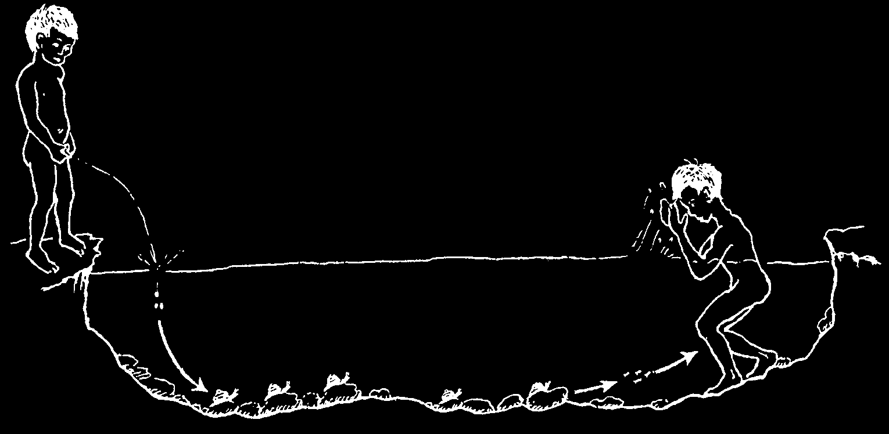
BLOOD FLUKES (SCHISTOSOMIASIS, BILHARZIA)
This infection is caused by a kind of worm that gets into the bloodstream. Different types of blood flukes are found in different parts of the world. One kind, common in
Africa and the Middle East, causes blood in the urine. Other types, which cause bloody diarrhea, occur in Africa, South America, and Asia. In areas where these diseases are known to occur, any person who has blood in his urine or stools should have a sample of it tested for fluke eggs.
Signs:
• The most common sign is blood in the urine (especially when passing the last drops)—or, for other kinds of flukes, bloody diarrhea.
• Pain may occur in the lower belly and between the legs; it is usually worst at the end of urinating. Low fever, weakness, and itching may occur. In women, there may be sores that look like a sexually transmitted infection.
• After months or years, the kidneys, liver or spleen may be damaged or enlarged, which can cause pain and eventually even death.
• Sometimes there are no early signs. In areas where schistosomiasis is very common, persons with only mild signs or belly pain should be tested.
Treatment:
See a health worker. Praziquantel works for all types of blood flukes.
Metrifonate and oxamniquine work for some kinds of blood flukes.
For dosages see p. 376.
Prevention:
Blood flukes are not spread directly from person to person. Part of their life they must live inside a certain kind of small water snail.
SNAIL,
REAL SIZE
Blood flukes spread like this:
1. Infected person
5. In this way, someone who washes or urinates or defecates swims in water where an infected person in water.
has urinated or defecated also becomes infected.
2. Urine or feces has worm eggs in it.
4. Young worms
3. Worm eggs hatch leave snail and go and go into snails.
into another person.
To prevent schistosomiasis, cooperate with programs to kill snails and treat infected persons. But most important: Everyone should learn to use latrines and NEVER
URINATE OR DEFECATE IN OR NEAR WATER.
For information on guinea worm, which is also spread in water, see p. 406 and 407.
VACCINATIONS (IMMUNIZATIONS)—SIMPLE, SURE PROTECTION
Vaccines protect against many dangerous diseases. Each country has a schedule of vaccinations, usually given for free. It is better to take your children to the nearest health center to be vaccinated while they are healthy than to take them for treatment when they are sick or dying. The most important vaccines are:
1. DPT, for diphtheria, whooping cough (pertussis), and tetanus. A child needs 4 or 5 injections usually given at 2 months, 4 months, 6 months, and 18 months old. Sometimes one more injection is given between 4 and 6 years old.
2. POLIO (infantile paralysis). The child needs drops in the mouth 4 or 5 times.
In some countries the first vaccination is given at birth and the other 3 doses are given at the same time as the DPT injections. In other countries, the first 3 doses are given at the same time as the DPT injections, the fourth dose is given between
12 and 18 months of age, and a fifth dose is given when the child is 4 years old. In a family where someone has HIV, do not use drops, use injections only.
3. BCG, for tuberculosis. A single injection is given under the skin of the left arm. Children can be vaccinated at birth or anytime afterwards. If any member of the household has tuberculosis, it is important to vaccinate babies in the first few weeks or months after birth. The vaccine makes a sore and leaves a scar.
4. MEASLES. A child needs 1 injection given no younger than 9 months of age, and often a second injection at 15 months or older. In many countries a '3 in 1’
vaccine called MMR is given for measles, mumps, and rubella (German measles).
One injection is given between 12 and 15 months old, and a second is given between 4 and 6 years of age. Do not give measles vaccinations to a child with HIV.
5. HepB (Hepatitis B). This vaccine is given in a series of 3 injections, at the same time as DPT injections. In some countries the first HepB is given at birth, the second at 2 months old, and the third at 6 months old. Make sure there are at least 4 weeks between the first and second injection, and 8 weeks between the second and third.
6. Hib (for Haemophilus influenza type b, which is a germ that causes meningitis and pneumonia in young children). Generally this vaccine is given in a series of 3 injections together with the first 3 DPT injections.
7. Td or TT (Tetanus toxoid), for tetanus (lockjaw) for adults and children over 12 years old. Throughout the world, tetanus vaccination is recommended with
1 injection every 10 years. In some countries a Td injection is given between 9 and
11 years of age (5 years after the last DPT vaccination), and then every 10 years.
Pregnant women should be vaccinated during each pregnancy so that their babies will be protected against tetanus of the newborn (see p. 182 and 250).
8. Rotavirus. Give the oral vaccine 2 or 3 times (depending on the manufacturer)
at 2 months, 4 months, and (if needed) 6 months old. It prevents this diarrhea disease, a leading cause of death for young children.
Vaccines for measles, polio, and tuberculosis must be kept frozen or very cold
(under 8° C). The vaccines for Hepatitis B, tetanus, and the DPT must be kept very cold (under 8° C) but never frozen. Vaccine that has been prepared but not used should be thrown away. DPT is still good and useable if it remains cloudy 1 hour after preparing it. If it becomes clear or has white flecks in it, it is spoiled and will not work.
For ways to keep vaccines cold, see Helping Health Workers Learn, Chapter 16.
Vaccinate your children on time.
Be sure they get the complete series of each vaccine they need.
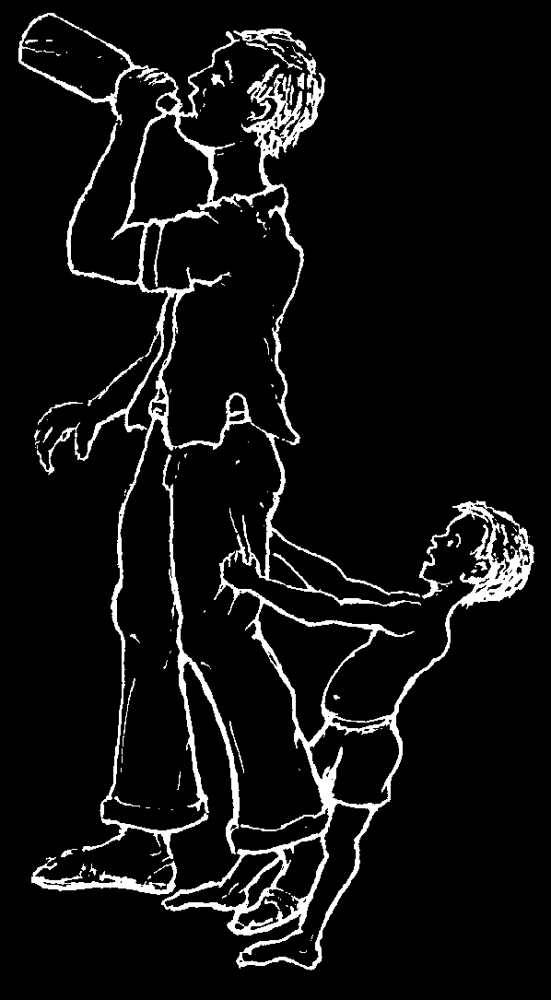
OTHER WAYS TO PREVENT SICKNESS AND INJURY
In this chapter we have talked about ways to prevent intestinal and other infections through hygiene, sanitation, and vaccination. All through this book you will find suggestions for the prevention of sickness and injury—from building healthy bodies by eating nutritious foods to the wise use of home remedies and modern medicines.
The Introduction and Words to the Village Health Worker give ideas for getting people working together to change the conditions that cause poor health.
In the remaining chapters, as specific health problems are discussed, you will find many suggestions for their prevention. By following these suggestions you can help make your home and village healthier places to live.
Keep in mind that one of the best ways to prevent serious illness and death is early and sensible treatment.
Early and sensible treatment is an important part of preventive medicine.
Before ending this chapter, we would like to mention a few aspects of prevention that are touched on in other parts of the book, but deserve special attention.
Habits that Affect Health
Some of the habits that people have not only damage their own health but in one way or another harm those around them. Many of these habits can be broken or avoided but the first step is to understand why breaking these habits is so important.
DRINKING
If alcohol has brought much joy, it has also brought much suffering—especially to the families of those who drink. A little alcohol now and then may do no harm.
But too often a little leads to a lot. In much of the world, heavy or excessive drinking is one of the underlying causes of major health problems—even for those who do not drink. Not only can drunkenness harm the health of those who drink (through diseases such as cirrhosis of the liver, p. 328, and hepatitis, p. 172), but it also hurts the family and community in many ways. Through the loss of judgment when drunk—and of self respect when sober—it leads to much unhappiness, waste, and violence, often affecting those who are loved most.

How many fathers have spent their last money on drink when their children were hungry? How many sicknesses result because a man spends the little bit of extra money he earns on drink rather than on improving his family’s living conditions?
How many persons, hating themselves because they have hurt those they love, take another drink—to forget?
Once a person realizes that alcohol is harming the health and happiness of those around him, what can he do? First, he must admit that his drinking is a problem. He must be honest with himself and with others. Some individuals are able to simply decide to stop drinking. More often people need help and support—from family, friends, and others who understand how hard it may be to give up this habit. People who have been heavy drinkers and have stopped are often the best persons to help others do the same. In many areas Alcoholics Anonymous (AA) groups exist where recovering alcoholics help one another to stop drinking (see p. 429).
Drinking is not so much a problem of individuals as of a whole community. A community that recognizes this can do much to encourage those who are willing to make changes. If you are concerned about the misuse of alcohol in your community, help organize a meeting to discuss these problems and decide what actions to take. For more about harm from alcohol, and community action, see Helping Health
Workers Learn, Chapters 5 and 27.
Many problems can be resolved when people work together and give each other help and support.
SMOKING
SMOKING
There are many reasons why smoking is dangerous to your own and your family’s health.
DAMAGES
1. Smoking increases the risk of cancer of the lungs lungs, mouth, throat, and lips. (The more you smoke, the greater the chance of dying of cancer.)
2. Smoking causes serious diseases of the lungs, including chronic bronchitis and emphysema (and is deadly for persons who already have these conditions stomach or have asthma).
3. Smoking can cause stomach ulcers or make heart and them worse.
circulation children
4. Smoking increases your chance of suffering or of those dying from heart disease or stroke.
who smoke
5. Children whose parents smoke have more cases of pneumonia and other respiratory illness than children whose parents do not smoke.
pregnant women
6. Babies of mothers who smoked during
(their pregnancy are smaller and develop more slowly than babies)
the babies whose mothers did not smoke.
family food
(turn page)
budget.

7. Parents, teachers, health workers, and others who smoke set an unhealthy example for children and young people, increasing the likelihood that they too will begin smoking.
8. Also, smoking costs money. It looks like little is spent, but it adds up to a lot.
In poorer countries, many of the poorest persons spend more on tobacco than the country spends per person on its health program. If money spent on tobacco were spent for food instead, children and whole families could be healthier.
Anyone interested in the health of others should not smoke, and should encourage others not to smoke.
CARBONATED DRINKS (soft drinks, soda pop, Coke, fizzy drinks, colas)
In some areas these drinks have become very popular. Often a poor mother will buy carbonated drinks for a child who is poorly nourished, when the same money could be better used to buy 2 eggs or other nutritious food.
IF YOU WANT HEALTHY CHILDREN
AND HAVE A LITTLE MONEY TO BUY THEM SOMETHING...
buy them a couple of eggs or other not carbonated drinks!
nutritious food,
YES
NO
Carbonated drinks have no nutritional value apart from sugar. And for the amount of sugar they contain, they are very expensive. Children who are given a lot of carbonated drinks and other sweet things often begin to get cavities and rotten teeth at an early age. Carbonated drinks are especially bad for persons with acid indigestion or stomach ulcer.
Natural drinks you make from fruits are healthier and often much cheaper than carbonated drinks.
Do not get your children used to drinking carbonated drinks.

CHAPTER
Some Very Common Sicknesses 13
DEHYDRATION
Most children who die from diarrhea die because they do not have enough water left in their bodies. This lack of water is called dehydration.
Dehydration results when the body loses more liquid than it takes in. This can happen with severe diarrhea, especially when there is vomiting too. It can also happen in very serious illness, when a person is too sick to take much food or liquid.
People of any age can become dehydrated, but dehydration develops more quickly and is most dangerous in small children.
Any child with watery diarrhea is in danger of dehydration.
It is important that everyone—especially mothers—know the signs of dehydration and how to prevent and treat it.
Signs of dehydration:
• thirst is often a first, early sign of dehydration
• little or no urine; the urine is dark yellow
• sudden weight loss
• dry mouth
• sunken, tearless eyes
• sagging in of the 'soft spot’
in infants
• loss of elasticity or stretchiness of the skin
Lift the skin between two fingers, like this...
If the skin fold does not fall right back to normal, the child is dehydrated.
Very severe dehydration may cause rapid, weak pulse (see Shock, p. 77), fast, deep breathing, fever, or seizures (fits, convulsions, p. 178).
When a person has watery diarrhea, or diarrhea and vomiting, do not wait for signs of dehydration. Act quickly—see the next page.

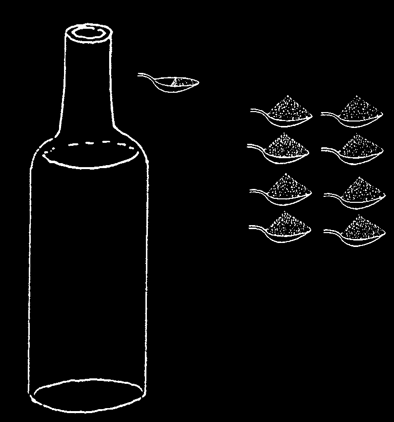
To prevent or treat dehydration: When a person has watery diarrhea, act quickly:
♦ Give lots of liquids to drink: Rehydration Drink is best. Or give a thin cereal porridge or gruel, teas, soups, or even plain water.
♦ Keep giving food. As soon as the sick child (or adult) will accept food, give frequent feedings of foods he likes and accepts.
♦ To babies, keep giving breast milk often—and before other drinks.
A special Rehydration Drink helps to prevent or treat dehydration, especially in cases of severe watery diarrhea:
2 WAYS TO MAKE 'HOME MIX’ REHYDRATION DRINK
1. WITH SUGAR AND SALT (Raw sugar or
2. WITH POWDERED CEREAL AND SALT
molasses can be used instead of sugar)
(Powdered rice is best. Or use finely ground maize, wheat flour, sorghum, or cooked and mashed potatoes.)
In 1 liter put half and 8 level of clean of a level teaspoons of
WATER
teaspoon
In 1 liter put half a and 8 heaping teaspoons
SUGAR.
of SALT of WATER teaspoon
(or 2 handfuls) of of SALT powdered CEREAL.
CAUTION: Before adding the sugar, taste the drink and
Boil for 5 to 7 minutes to be sure it is less form a liquid gruel or watery salty than tears.
porridge. Cool the Drink quickly and start giving it to the child.
To either Drink add half a cup of fruit juice, coconut water, or mashed ripe banana, if available.
CAUTION: Taste the Drink each time before you give it
This provides potassium which may help the child to be sure it is not spoiled. Cereal drinks can spoil in a few accept more food and drink.
hours in hot weather.
IMPORTANT: Adapt the Drink to your area. If liter containers or teaspoons are not in most homes, adjust quantities to local forms of measurement. Where people traditionally give cereal gruels to young children, add enough water to make it liquid, and use that. Look for an easy and simple way.
Give the dehydrated person sips of this Drink every 5 minutes, day and night, until he begins to urinate normally. A large person needs 3 or more liters a day. A small child usually needs at least 1 liter a day, or 1 glass for each watery stool. Keep giving the Drink often in small sips, even if the person vomits. Not all of the Drink will be vomited.
WARNING: If dehydration gets worse or other danger signs appear, go for medical help (see p. 159). It may be necessary to give liquid in a vein (intravenous solution).
Note: In some countries packets of Oral Rehydration Salts (ORS) are available for mixing with water. These contain a simple mix of sugar, salt, citrate, zinc, and potassium (see p. 381).
However, homemade drinks—especially cereal drinks—when correctly prepared are often cheaper, safer, and more effective than ORS packets.
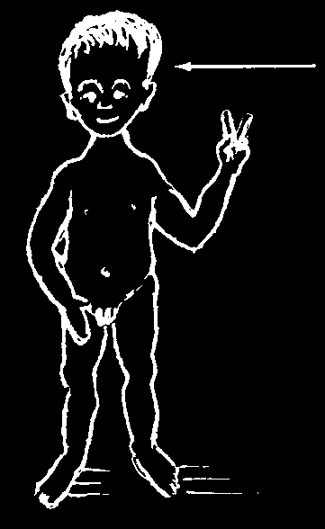
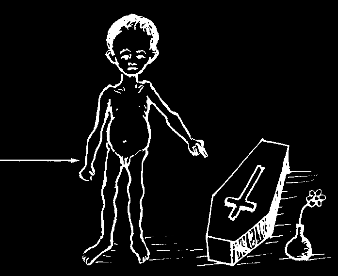
DIARRHEA AND DYSENTERY
When a person has loose or watery stools, he has diarrhea. If mucus and blood can be seen in the stools, he has dysentery.
Diarrhea can be mild or serious. It can be acute (sudden and severe) or chronic
(lasting many days).
Diarrhea is more common and more dangerous in young children, especially those who are poorly nourished.
This child is well nourished. He is less likely to get diarrhea. If he gets it he usually will get well again quickly.
This child is poorly nourished. He is more likely to get diarrhea—and there is a much greater chance he will die from it.
Diarrhea has many causes. Usually no medicines are needed, and the child gets well in a few days if you give him lots of Rehydration Drink and food. (If he does not eat much, give him a little food many times a day.) Occasionally, special treatment is needed. However, most diarrhea can be treated successfully in the home, even if you are not sure of the exact cause or causes.
THE MAIN CAUSES OF DIARRHEA:
poor nutrition (p. 154) weakens the child
HIV (long-lasting diarrhea may be an early and makes diarrhea from other causes more sign of AIDS, p. 399)
frequent and worse inability to digest milk (mainly in severely shortage of water and unclean conditions (no malnourished children and certain adults)
latrines) spread the germs that cause diarrhea difficulty babies have digesting foods that are virus infection or 'intestinal flu’
new to them (p. 154)
an infection of the gut caused by bacteria allergies to certain foods (seafood, crayfish,
(p. 131), amebas (p. 144), or giardia (p. 145)
etc., p. 166); occasionally babies are allergic to cow’s milk or other milks worm infections (p. 140 to 144) (most worm infections do not cause diarrhea)
side effects produced by certain medicines, such as ampicillin or tetracycline (p. 58)
infections outside the gut (ear infections, p. 309; tonsillitis, p. 309; measles, p. 311;
laxatives, purges, irritating or poisonous urinary infections, p. 234)
plants, certain poisons malaria (falciparum type—in parts of Africa, eating too much unripe fruit or heavy, greasy
Asia, and the Pacific, p. 186)
foods food poisoning (spoiled food, p. 135)

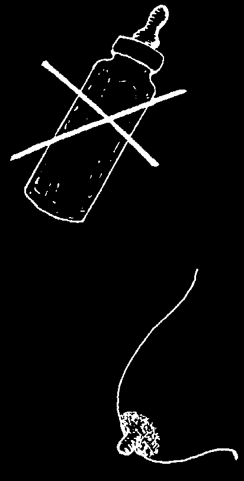
Preventing diarrhea:
Although diarrhea has many different causes, the most common are infection and poor nutrition. With good hygiene and good food, most diarrhea could be prevented. And if treated correctly by giving lots of drink and food, fewer children who get diarrhea would die.
Diarrhea is also very dangerous for people with
HIV, especially children. Using cotrimoxazole can prevent diarrhea in persons with HIV (see p. 357).
Children who are poorly nourished get diarrhea and die from it far more often than
MALNUTRITION
DIARRHEA
those who are well nourished. Yet diarrhea itself can be part of the cause of malnutrition.
Malnutrition causes diarrhea.
Diarrhea causes malnutrition.
THE 'VICIOUS CIRCLE’ OF
And if malnutrition already exists, diarrhea
MALNUTRITION AND DIARRHEA
rapidly makes it worse.
TAKES MANY CHILDREN’S LIVES.
This results in a vicious circle, in which each makes the other worse. For this reason, good nutrition is important in both the prevention and treatment of diarrhea.
Prevent diarrhea by preventing malnutrition.
Prevent malnutrition by preventing diarrhea.
To learn about the kinds of foods that help the body resist or fight off different illnesses, including diarrhea, read Chapter 11.
The prevention of diarrhea depends both on good nutrition and cleanliness. Many suggestions for personal and public cleanliness are given in Chapter 12. These include the use of latrines, the importance of clean water, and the protection of foods from dirt and flies.
Here are some other important suggestions for preventing diarrhea in babies:
NO
♦ Breastfeed rather than bottle feed babies. Give only breast milk for the first 6 months. Breast milk helps babies resist the infections that cause diarrhea. If it is not possible to breastfeed a baby, feed her with a cup and spoon. Do not use a baby bottle because it is harder to keep clean and more likely to cause an infection.
♦ When you begin to give the baby new or solid food,
YES start by giving her just a little, mashing it well, and mixing it with a little breast milk. The baby has to learn how to digest new foods. If she starts with too much at one time, she may get diarrhea. Do not stop giving breast milk suddenly. Start with other foods while the baby is still breastfeeding.
♦ Keep the baby clean—and in a clean place. Try to keep her from putting dirty things in her mouth.
BREASTFEEDING HELPS
PREVENT DIARRHEA
♦ Do not give babies unnecessary medicines.
Treatment of diarrhea:
For most cases of diarrhea no medicine is needed. If the diarrhea is severe, the biggest danger is dehydration. If the diarrhea lasts a long time, the biggest danger is malnutrition. So the most important part of treatment has to do with giving enough liquids and enough food. No matter what the cause of diarrhea, always take care with the following:
1. PREVENT OR CONTROL DEHYDRATION. A person with diarrhea must drink a lot of liquids. If diarrhea is severe or there are signs of dehydration, give him
Rehydration Drink (p. 152). Even if he does not want to drink, gently insist that he do so. Have him take several swallows every few minutes.
2. MEET NUTRITIONAL NEEDS. A person with diarrhea needs food as soon as he will eat. This is especially important in small children or persons who are already poorly nourished. Also, when a person has diarrhea, food passes through the gut very quickly and is not all used. So give the person food many times a day—especially if he only takes a little at a time.
♦ A baby with diarrhea should go on breastfeeding.
♦ An underweight child should get plenty of energy foods and some body-building foods (proteins) all the time he has diarrhea—and extra when he gets well. If he stops eating because he feels too sick or is vomiting, he should eat again as soon as he can. Giving Rehydration Drink will help the child be able to eat. Although giving food may cause more frequent stools at first, it can save his life.
♦ If a child who is underweight has diarrhea that lasts for many days or keeps coming back, give him more food more often—at least 5 or 6 meals each day.
Often no other treatment is needed.
♦ If possible, give zinc supplements to a baby or child with diarrhea (see p. 393).
FOODS FOR A PERSON WITH DIARRHEA
When the person is vomiting or
As soon as the person is able to eat, in addition to giving the feels too sick to eat, he should drinks listed at the left, he should eat a balanced selection of the drink:
following foods or similar ones:
watery mush or broth of rice, energy foods body-building foods maize powder, or potato ripe or cooked bananas chicken (boiled or roasted)
rice water (with some mashed rice)
crackers eggs (boiled)
rice, oatmeal, or other meat (well cooked, without chicken, meat, egg, or bean broth well-cooked grain much fat or grease)
REHYDRATION DRINK
fresh maize (well cooked beans, lentils, or peas and mashed)
(well cooked and mashed)
Breast milk potatoes fish (well cooked)
yogurt or fermented milk drinks applesauce (cooked)
milk (sometimes this papaya causes problems, see the next page)
(It helps to add a little sugar or vegetable oil to the cereal foods.)
DO NOT EAT OR DRINK
fatty or greasy foods any kind of laxative or purge highly seasoned food most raw fruits alcoholic drinks
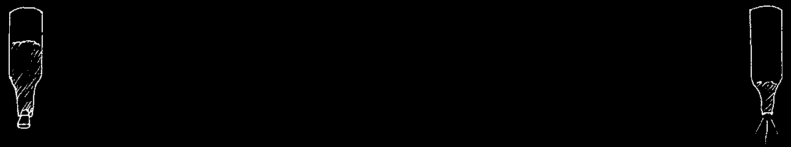
Diarrhea and milk:
Breast milk is the best food for babies. It helps prevent and combat diarrhea.
Keep giving breast milk when the baby has diarrhea.
Cow’s milk, powdered milk, or canned milk can be good sources of energy and protein. Keep on giving them to a child with diarrhea. In a very few children these milks may cause more diarrhea. If this happens, try giving less milk and mixing it with other foods. But remember: a poorly nourished child with diarrhea must have enough energy foods and protein. If less milk is given, well cooked and mashed foods such as chicken, egg yolk, meat, fish, or beans should be added. Beans are easier to digest if their skins have been taken off and they are boiled and mashed.
As the child gets better, he will usually be able to drink more milk without getting diarrhea.
Medicines for diarrhea:
For most cases of diarrhea no medicines are needed. But in certain cases, using the right medicine can be important. However, many of the medicines commonly used for diarrhea do little or no good. Some are actually harmful:
GENERALLY IT IS BETTER NOT TO USE THE FOLLOWING
MEDICINES IN THE TREATMENT OF DIARRHEA:
'Anti diarrhea’ medicines with kaolin and pectin (such as Kaopectate, p. 383)
make diarrhea thicker and less frequent. But they do not correct dehydration or control infection. Some anti diarrhea medicines, like loperamide (Imodium) or diphenoxylate
(Lomotil) may even cause harm or make infections last longer.
'ANTI DIARRHEA MEDICINES’ ACT LIKE PLUGS. THEY KEEP
IN THE INFECTED MATERIAL THAT NEEDS TO COME OUT.
'Anti-diarrhea’ mixtures containing neomycin or streptomycin should not be used. They irritate the gut and often do more harm than good.
Antibiotics like ampicillin and tetracycline are useful only in some cases of diarrhea
(see p. 158). But they themselves sometimes cause diarrhea, especially in small children.
If, after taking these antibiotics for more than 2 or 3 days, diarrhea gets worse rather than better, stop taking them—the antibiotics may be the cause.
Chloramphenicol has certain dangers in its use (see p. 356) and should never be used for mild diarrhea or given to babies less than 1 month old.
Laxatives and purges should never be given to persons with diarrhea. They will make it worse and increase the danger of dehydration.
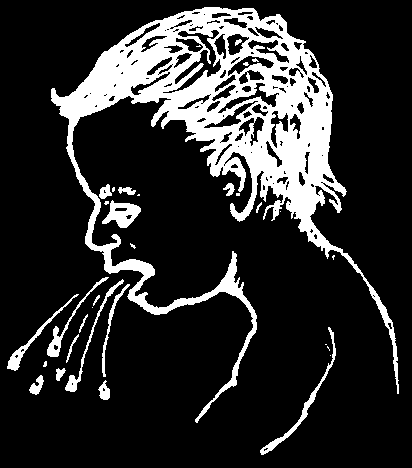
Special treatment in different cases of diarrhea:
While most cases of diarrhea are best treated by giving plenty of liquids and food, and no medicine, sometimes special treatment is needed.
In considering treatment, keep in mind that some cases of diarrhea, especially in small children, are caused by infections outside the gut. Always check for infections of the ears, the throat, and the urinary system. If found, these infections should be treated. Also look for signs of measles.
If the child has mild diarrhea together with signs of a cold, the diarrhea is probably caused by a virus, or 'intestinal flu’, and no special treatment is called for.
Give lots of liquids and all the food the child will accept.
In certain difficult cases of diarrhea, analysis of the stools or other tests may be needed to know how to treat it correctly. But usually you can learn enough from asking specific questions, seeing the stools, and looking for certain signs Here are some guidelines for treatment according to signs.
1. Sudden, mild diarrhea. No fever. (Upset stomach? 'Intestinal flu’?)
♦ Drink lots of liquids. Usually no special treatment is needed. It is usually best not to use 'diarrhea plug’ medicines such as kaolin with pectin
(Kaopectate, p. 383) or diphenoxylate (Lomotil). They are never necessary and do not help either to correct dehydration or get rid of infection so why waste money buying them? Never give them to persons who are very ill, or to small children.
2. Diarrhea with vomiting. (Many causes)
♦ If a person with diarrhea is also vomiting, the danger of dehydration is greater, especially in small children.
It is very important to give the Rehydration Drink
(p. 152), tea, soup, or whatever liquids he will take.
Keep giving the Drink, even if the person vomits it out again. Some will stay inside. Give sips every 5 to
10 minutes.
♦ If you cannot control the vomiting or if the dehydration gets worse, seek medical help fast.
3. Diarrhea with mucus and blood. Often chronic. No fever. There may be diarrhea some days and constipation other days. (Possibly amebic dysentery.
For more details, see page 144.)
♦ Use metronidazole (p. 368). Take the medicine according to the recommended dose. If the diarrhea continues after treatment, seek medical advice.
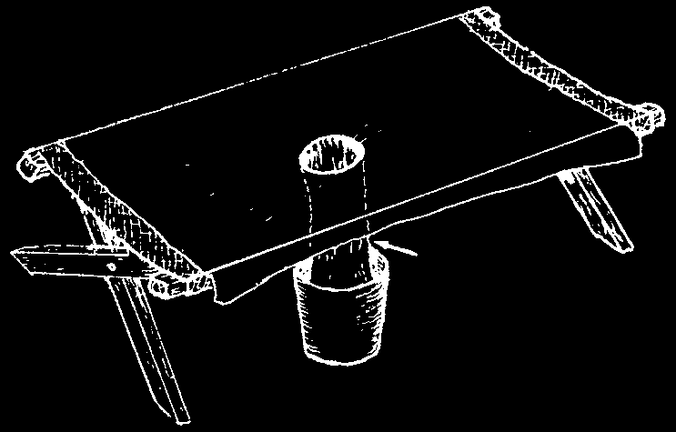
4. Severe diarrhea with blood, with fever. (Bacterial dysentery caused by
Shigella)
♦ Give ciprofloxacin to adults, 500 mg. 2 times a day for 3 days (see p.
356). But pregnant women and children under 18 years old should not use ciprofloxacin. (For children under 8 weeks old, seek medical help.) Shigella is often resistant to ampicillin (p. 352) and cotrimoxazole (p. 357) but they are still being used. If the first medicine you try does not bring improvement within 2 days, try another or seek medical help. Women in the first 3 months of pregnancy should not use cotrimoxazole (see p. 357). Azithromycin will also work, and is safe during pregnancy and for children. For adults, give 500 mg. by mouth the first day, and 250 mg. once a day for 4 days. For children’s doses, see a health worker.
5. Severe diarrhea with fever, usually no blood.
♦ Fever may be partly caused by dehydration. Give lots of Rehydration Drink
(p. 152). If the person is very ill and does not improve within 6 hours after beginning Rehydration Drink, seek medical help.
♦ Check for signs of typhoid fever. If present, treat for typhoid (see p. 188).
♦ In areas where falciparum malaria is common, also treat persons with diarrhea and fever for malaria (see p. 186), especially if they have an enlarged spleen.
6. Yellow, bad smelling diarrhea with bubbles or froth, without blood or mucus.
Often a lot of gas in the belly, and burps that taste bad, like sulfur.
♦ This may be caused by parasites called giardia (see p. 145) or perhaps by malnutrition. In either case, plenty of liquid, nutritious food, and rest are often the best treatment. Severe giardia infections can be treated with metronidazole (p. 368). Quinacrine (Atabrine) is cheaper, but has worse side effects (p. 369).
7. Chronic diarrhea (diarrhea that lasts a long time or keeps coming back).
♦ This can be in part caused by malnutrition, or by a chronic infection such as that caused by amebas or giardia. See that the child eats more nutritious food more times a day (p. 110). If the diarrhea still continues, seek medical help.
8. Diarrhea like rice water. (Cholera)
♦ 'Rice water’ stools in very large quantities may be a sign of cholera. In countries where this dangerous disease occurs, cholera often comes in epidemics (striking many people at once) and is usually worse in older children and adults. Severe dehydration can develop quickly, especially if there is vomiting also. It is important to treat the dehydration continuously with rehydration drink and other liquids (see p. 152). Cholera should be reported to the health authorities. Seek medical help.
A 'cholera bed’ like this can be made for persons with very severe diarrhea. Watch how much liquid the person is losing and be sure he drinks larger amounts of
Rehydration Drink. Give him the Drink sleeve made of almost continuously, and have him drink plastic sheet as much as he can.
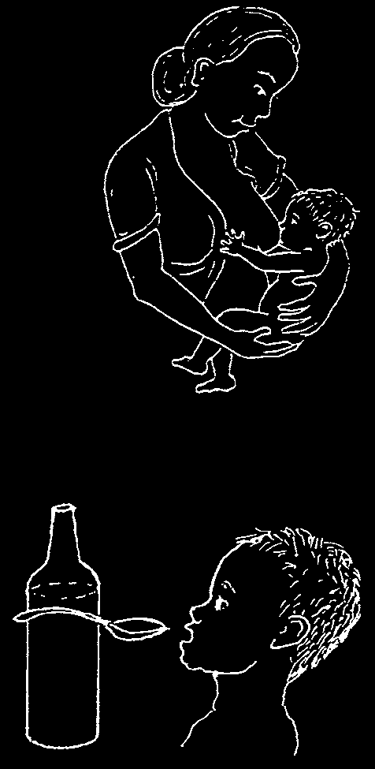
Care of Babies with Diarrhea
Diarrhea is especially dangerous in babies and
GIVE HIM BREAST MILK
small children. Often no medicine is needed, but special care must be taken because a baby can die very quickly of dehydration.
♦ Continue breastfeeding and also give sips of
Rehydration Drink.
♦ If vomiting is a problem, give breast milk often, but only a little at a time. Also give Rehydration
Drink in small sips every 5 to 10 minutes (see
Vomiting, p. 161).
AND ALSO
♦ If there is no breast milk, try giving frequent
REHYDRATION DRINK
small feedings of some other milk or milk substitute (like milk made from soybeans)
mixed to half normal strength with boiled water. If milk seems to make the diarrhea worse, give some other protein (mashed chicken, eggs, lean meat, or skinned mashed beans, mixed with sugar or well-cooked rice or another carbohydrate, and boiled water).
♦ If possible, give zinc supplements (see p. 393).
♦ If the child is younger than 1 month, try to find a health worker before giving any medicine. If there is no health worker and the child is very sick, give him an 'infant syrup’ that contains ampicillin: half a teaspoon 4 times daily (see p. 352). It is better not to use other antibiotics.
When to Seek Medical Help in Cases of Diarrhea
Diarrhea and dysentery can be very dangerous—especially in small children.
In the following situations you should get medical help:
• if diarrhea lasts more than 4 days and is not getting better—or more than
1 day in a small child with severe diarrhea
• if the person shows signs of dehydration and is getting worse
• if the child vomits everything he drinks, or drinks nothing, or if frequent vomiting continues for more than 3 hours after beginning Rehydration Drink
• if the child begins to have seizures, or if the feet and face swell
• if the person was very sick, weak, or malnourished before the diarrhea began
(especially a little child or a very old person)
• if there is much blood in the stools. This can be dangerous even if there is only very little diarrhea (see gut obstruction, p. 94).
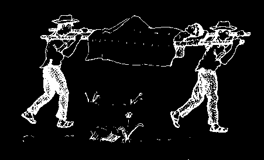
ed
Cur
YES ed
Cur y
YES e rises
TION DRINK. (see p. 152)
YES ol the dehydration:
No better
Continue to give cotrimoxazole, ampicillin, or chloramphenicol for 2 weeks. (see p. 356)
No better, slow pulse, ver e signs of typhoid
Contr
Drink lots of liquids and
REHYDRA
Give ampicillin (p. 352) or cotrimoxazole (see p. 358).
within 3 days y day e ther
Ar fever? (temperatur ever ill, etc., see p. 188)
—a lot
CUTE DIARRHEA
NO e best ed y mouth, etc.)
e than 6 hours
WITH A
Cur onidazole for
DIARRHEA
eastfeeding.
eat the dehydration?
e signs of dehydration? (little or ting to tr
Give metr amebas. (see p. 369)
No better
SEEK MEDICAL HELP
e fever that lasts mor e ther
Ar no urine, sunken eyes, dr
PREVENT OR CORRECT MALNUTRITION:
Give food as soon as the person will eat.
Bland, well-mashed foods ar of energy foods with some body-building foods. Continue br
Is ther after star
YES
THE CARE OF A PERSON
ed onidazole
Cur
YES dia. (see p. 369)
NO
NO
Give metr or quinacrine for giar
No better
Diarrhea with blood or mucus?
event dehydration:
othy?
Pr
Drink lots of liquids.
y fr ed
NO
Diarrhea yellow and ver
Cur
NO
Give no medicine.
Continue giving Rehydration
Drink and food.
No better


VOMITING
Many people, especially children, have an occasional 'stomach upset’ with vomiting. Often no cause can be found. There may be mild stomach or gut ache or fever. This kind of simple vomiting usually is not serious and clears up by itself.
Vomiting is one of the signs of many different problems, some minor and some quite serious, so it is important to examine the person carefully. Vomiting often comes from a problem in the stomach or guts, such as: an infection (see diarrhea, p. 153), poisoning from spoiled food (p. 135), or 'acute abdomen’ (for example, appendicitis or something blocking the gut, p. 94). Also, almost any sickness with high fever or severe pain may cause vomiting, especially malaria (p. 186), hepatitis
(p. 172), tonsillitis (p. 309), earache (p. 309), meningitis
(p. 185), urinary infection (p. 234), gallbladder pain
(p. 329) or migraine headache (p. 162).
Danger signs with vomiting—seek medical help quickly!
• dehydration that increases and that you cannot control (p. 152)
• severe vomiting that lasts more than 24 hours
• violent vomiting, especially if vomit is dark green, brown, or smells like shit
(signs of obstruction, p. 94)
• constant pain in the gut, especially if the person cannot defecate (shit)
or if you cannot hear gurgles when you put your ear to the belly (see acute abdomen: obstruction, appendicitis, p. 94)
• vomiting of blood (ulcer, p. 128; cirrhosis, p. 328)
To help control simple vomiting:
♦ Eat nothing while vomiting is severe.
♦ Sip a cola drink or ginger ale. Some herbal teas, like camomile, may also help.
♦ For dehydration give small frequent sips of cola, tea, or
Rehydration Drink (p. 152).
♦ If vomiting does not stop soon, use a vomit control medicine like promethazine (p. 385) or diphenhydramine (p. 386). But do not give these medicines to children under 2 years old.
Most of these come in pills, syrups, injections, and suppositories (soft pills you push up the anus). Tablets or syrup can also be put up the anus. Grind up the tablet in a little water. Put it in with an enema set or syringe without a needle.
When taken by mouth, the medicine should be swallowed with very little water and nothing else should be swallowed for 5 minutes. Never give more than the recommended dose. Do not give a second dose until dehydration has been corrected and the person has begun to urinate. If severe vomiting and diarrhea make medication by mouth or anus impossible, give an injection of one of the vomit-control medicines. Promethazine may work best. Take care not to give too much.

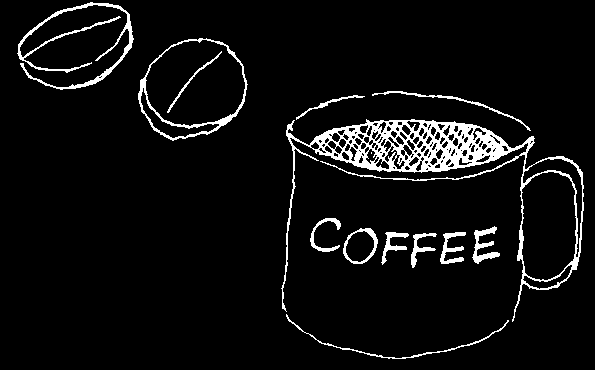
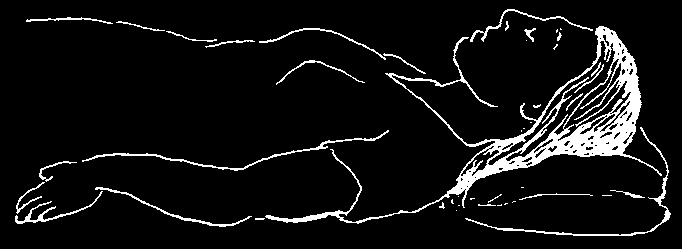
HEADACHES AND MIGRAINES
For simple or nervous headache,
SIMPLE HEADACHE can be helped by rest folk cures sometimes work as and aspirin. It often helps to put a cloth well as modern medicine.
soaked in hot water on the back of the neck and to massage (rub) the neck and shoulders gently. Some other home remedies also seem to help.
folk cure
Headache is common with any sickness that causes fever. If headache is severe, check for signs of meningitis (p. 185).
Headaches that keep coming back may be a sign of a chronic illness, poor aspirin nutrition, or chemicals at work or in the environment. It is important to eat well and get enough sleep. If you think that chemicals could be causing the headaches or if they do not go away, talk with a health worker.
A MIGRAINE is a severe throbbing headache often on one side of the head only. Migraine attacks may come often, or months or years apart.
A typical migraine begins with blurring of vision, seeing strange spots of light, or numbness of one hand or foot. This is followed by severe headache, which may last hours or days. Often there is vomiting. Migraines are very painful, but not dangerous.
TO STOP A MIGRAINE, DO THE FOLLOWING AT THE FIRST SIGN:
aspirin
♦ Take 2 aspirins with a cup of strong coffee or strong black tea.
♦ Lie down in a dark, quiet place. Do your best to relax. Try not to think about your problems.
♦ For especially bad migraine headaches, take aspirin, if possible with codeine, or with another sedative. Or obtain pills of ergotamine with caffeine (Cafergot, p. 379). Take 2 pills at first and 1 pill every
30 minutes until the pain goes away. Do not take more than 6 pills in 1 day.
WARNING: Do not use Cafergot during pregnancy.

COLDS AND THE FLU
Colds and the flu are common virus infections that may cause runny nose, cough, sore throat, and sometimes fever or pain in the joints. There may be mild diarrhea, especially in young children.
Colds and the flu almost always go away without medicine. Do not use penicillin, tetracycline, or other antibiotics, as they will not help at all and may cause harm.
♦ Drink plenty of water and get enough rest.
♦ Aspirin (p. 378) or acetaminophen (p. 379) helps lower temperature and relieve body aches and headaches.
More expensive 'cold tablets’ are no better than aspirin. So why waste your money?
♦ No special diet is needed. However, fruit juices, especially orange juice or lemonade, are helpful.
For treating coughs and stuffy noses that come with colds, see the next pages.
WARNING: Do not give any kind of antibiotic or injections to a child with a simple cold. They will not help and may cause harm.
If a cold or the flu lasts more than a week, or if the person has fever, coughs up a lot of phlegm (mucus with pus), has shallow fast breathing or chest pain, he could be developing bronchitis or pneumonia (see p. 170 and 171). An antibiotic may be called for. The danger of a cold turning into pneumonia is greater in old people, in those who have lung problems like chronic bronchitis, in people who cannot move much, and in people with HIV. People with HIV can take cotrimoxazole daily to prevent pneumonia and other infections (see p. 357).
Sore throat is often part of a cold. No special medicine is needed, but it may help to gargle with warm water. However, if the sore throat begins suddenly, with high fever, it could be a strep throat. Special treatment is needed (see p. 309).
Prevention of colds:
♦ Getting enough sleep and eating well helps prevent colds. Eating oranges, tomatoes, and other fruit containing vitamin C may also help.
♦ Contrary to popular belief, colds do not come from getting cold or wet
(although getting very cold, wet, or tired can make a cold worse). A cold is
'caught’ from others who have the infection and sneeze the virus into the air.
♦ To keep from giving his cold to others, the sick person should eat and sleep separately—and take special care to keep far away from small babies. He should cover his nose and mouth when he coughs or sneezes.
♦ To prevent a cold from leading to earache (p. 309), try not to blow your nose—just wipe it. Teach children to do the same.


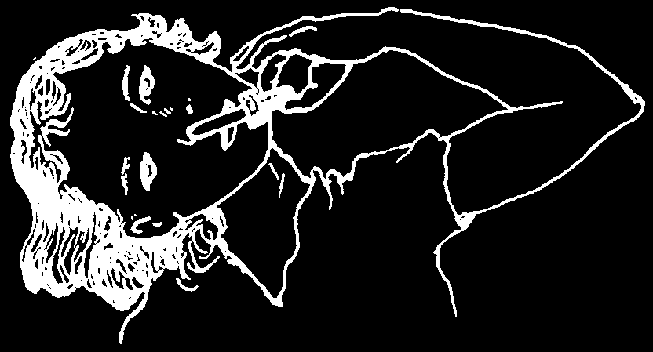
STUFFY AND RUNNY NOSES
A stuffy or runny nose can result from a cold or allergy (see next page). A lot of mucus in the nose may cause ear infections in children or sinus problems in adults.
To help clear a stuffy nose, do the following:
1. In little children, carefully suck the mucus out of the nose with a suction bulb or syringe without a needle, like this:
2. Older children and adults can put a little salt water into their hand and sniff it into the nose. This helps to loosen the mucus.The water should not be too salty. 1/4 teaspoon of salt mixed in a cup of water is enough.
3. Breathing hot water vapor as described on page 168 helps clear a stuffy nose.
4. Wipe a runny or stuffy nose, but try not to blow it. Blowing the nose may lead to earache and sinus infections.
5. Persons who often get earaches or sinus trouble after a cold can help prevent these problems by using decongestant nose drops with phenylephrine or ephedrine (p. 383).
After sniffing a little salt water, put the drops in the nose like this:
With the head sideways, put 2 or 3 drops in the lower nostril. Wait a couple of minutes and then do the other side.
CAUTION: Use decongestant drops no more than 3 times a day, for no more than 3 days.
A decongestant syrup (with phenylephrine or something similar) may also help.
Prevent ear and sinus infections—try not to blow your nose, just wipe it.
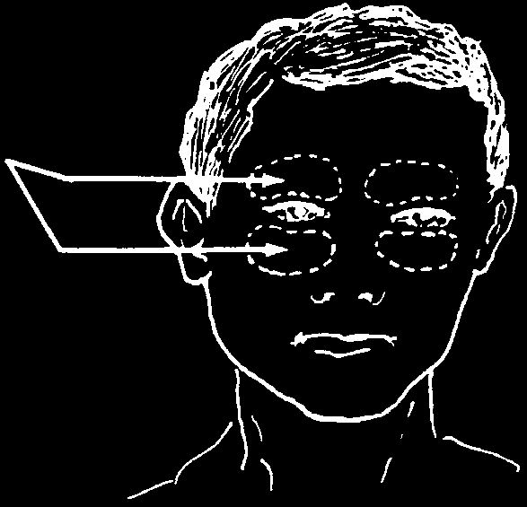

SINUS TROUBLE (SINUSITIS)
Sinusitis is an acute or chronic (long-term) inflammation of the sinuses or hollows in the bone that open into the nose. It usually occurs after a person has had an infection of the ears or throat, or after a bad cold.
Signs:
• Pain in the face above and below the eyes, here
(It hurts more when you tap lightly just over the bones, or when the person bends over.)
• Thick mucus or pus in the nose, perhaps with a bad smell. The nose is often stuffy.
• Fever (sometimes).
• Certain teeth may hurt.
Treatment:
♦ Drink a lot of water.
♦ Sniff a little salt water into the nose (see p. 164), or breathe steam from hot water to clear the nose (see p. 168).
♦ Put hot compresses on the face.
♦ Use decongestant nose drops such as phenylephrine (Neo-synephrine, p. 383).
♦ Use an antibiotic such as tetracycline (p. 356), ampicillin (p. 352), or penicillin
(p. 352).
♦ If the person does not get better, seek medical help.
Prevention:
When you get a cold and a stuffy nose, try to keep your nose clear.
Follow the instructions on page 164.
HAY FEVER (ALLERGIC RHINITIS)
Runny nose and itchy eyes can be caused by an allergic reaction to something in the air that a person has breathed in (see the next page). It is often worse at certain times of year.
Treatment:
Use an antihistamine such as chlorpheniramine
(p. 386). Dimenhydrinate (Dramamine, p. 386), usually sold for motion sickness, also works.
Prevention:
Find out what things cause this reaction (for example: dust, chicken feathers, pollen, mold) and try to avoid them.


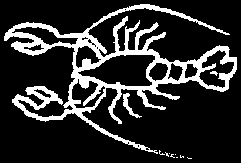